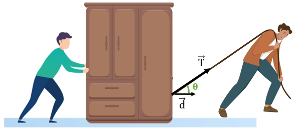

Trabalho é uma grandeza física relacionada a transferência de energia devido a
atuação de uma força. Realizamos um trabalho quando aplicamos uma força em um corpo
e este sofre um deslocamento.
A unidade de medida do trabalho no sistema internacional de unidades é o N.m.
Essa unidade recebe o nome de joule (J).
A energia é definida como a capacidade de produzir trabalho, ou seja, um corpo
só é capaz de realizar um trabalho se possuir energia.
Trabalho de uma Força
τ = F . d . cos θ
Sendo,
τ: trabalho (J)
F : força (N)
d : deslocamento (m)
θ : ângulo formado entre o vetor força e a direção do deslocamento

Trabalho da Energia Cinética
Para que um corpo sofra uma variação de energia cinética é necessário que um
trabalho seja feito sobre ele.
logo o trabalho realizado para acelerar ou desacelerar um corpo e dado por:
τ = ΔECinética
sendo,
τ: trabalho (J)
ΔECinética : Variação da Energia Cinética
Trabalho da Força Peso
A força peso é calculada por P = m.g. Desta forma, podemos calcular o trabalho da
força peso, com sendo:
τ = m . g . h
Sendo,
τ: trabalho (J)
m : massa do corpo (kg)
g : aceleração da gravidade (m/s²)
h : altura (m)
Atividade
1) Usain Bolt recordista mundial atinge sua velocidade máxima de 12 m/s em 3,78
segundos nas 13 primeiras passadas, sabendo que a massa do atleta é de 90kg.
Qual foi o trabalho do seu corpo para atingir sua velocidade máxima?
2) Qual o trabalho realizado pelo motor de um carro, mudar a velocidade de um carro de
3) Qual é o trabalho realizado por uma pessoa de 1,70 m, para levantar uma caixa
de 30kg nas costas?